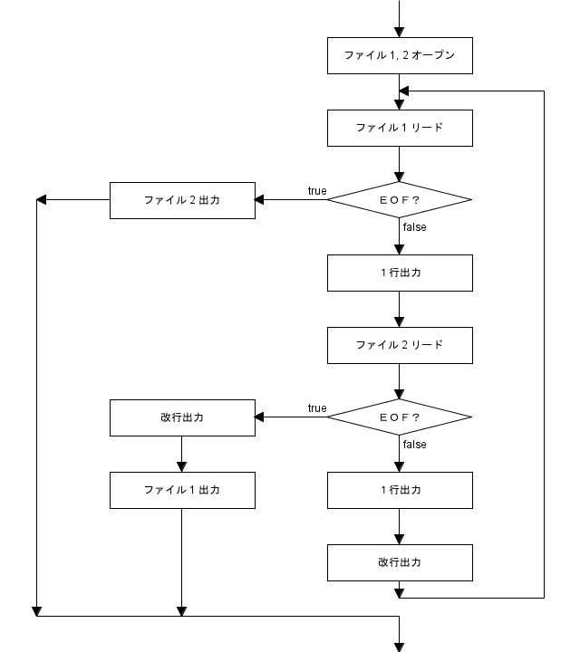

前回は関数の基本的な使い方について説明しました。今回は Ruby のファイル入出力について説明します。プログラムの典型的な動作は、外部から入力されたデータを処理し、その結果を外部へ出力することです。外部とのインターフェースはいろいろありますが、基本となるのがファイル入出力です。特にテキストファイルの処理はスクリプト言語の得意分野で、もちろん Ruby でも簡単にプログラムできるようになっています。
Ruby でファイル入出力を行う場合、IO クラスのオブジェクトというデータ [*1] を介してファイルにアクセスします。本稿ではこのオブジェクトを IO オブジェクトと呼ぶことにします。IO オブジェクトはファイルと 1 対 1 に対応していて、ファイルからデータを入力する場合は、IO オブジェクトを経由してデータが渡されます。ファイルへデータを出力するときにも、IO オブジェクトを経由して行われます。
通常のファイルは IO オブジェクトを生成しないとアクセスすることはできません。ただし、標準入出力は Ruby の起動時に IO オブジェクトが自動的に生成されるので、簡単に利用することができます。一般に、キーボードからの入力を「標準入力 (standard input)」、画面への出力を「標準出力 (standard output)」といいます。標準入出力に対応する IO オブジェクトは定数に格納されています。表 1 に定数名を示します。
| 定数名 | ファイル |
|---|---|
| STDIN | 標準入力 |
| STDOUT | 標準出力 |
| STDERR | 標準エラー出力 |
Ruby の場合、英大文字で始まる変数名は「定数」として扱われます。定数は代入によって定義されますが、関数 (メソッド) の中で定義することはできません。一般に、一度設定された定数は値を書きえることができませんが、Ruby の定数は書き換えることが可能で、そのときには警告メッセージが出力されます。トップレベルで定義された定数は、グローバル変数と同様にプログラム全体から参照することができます。
ファイルのアクセスは標準入出力を使うと簡単です。標準入力からデータを受け取る関数に gets() があります。irb で gets() を実行してみましょう。
irb> gets foo => "foo\n" irb> gets foo bar baz => "foo bar baz\n" irb> gets 12345678 => "12345678\n"
gets() は標準入力から 1 行読み込み、それを文字列にして返します。このとき、改行文字は取り除かれません。gets() はファイルの終了を検出すると nil を返します。
データの出力は関数 print() や puts() で行うと簡単です。print() と puts() は可変個の引数を受け取る関数なので、複数のデータを表示することができます。puts() はデータを出力したあと改行しますが、print() は改行しないので注意してください。
irb> for x in [1, 2, 3, 4, 5] irb> print x irb> end 12345=> [1, 2, 3, 4, 5] irb> for x in [1, 2, 3, 4, 5] irb> puts x irb> end 1 2 3 4 5 => [1, 2, 3, 4, 5]
それでは簡単な例として、データの合計値を求めるプログラムを作ります。リスト 1 を見てください。
リスト 1 : 合計値を求める (1) total = 0 while a = gets n = a.to_i break if n < 0 total += n end print "total = ", total, "/n"
このプログラムをファイル test1.rb に保存してシェルで実行すると、次のようになります。
$ ruby test1.rb 1 2 3 4 5 -1 total = 15
数値をキーボードから入力します。文字列から整数値に変換するためメソッド to_i() を呼び出して変数 n にセットします。そして、n が負の値であれば break 文で while ループから脱出して合計値を表示します。
また、ファイルの終了を検出すると gets() は nil を返すので、while ループを終了して合計値を表示することができます。-1 の代わりに Windows では Ctrl-Z を、UNIX 系 OS では Ctrl-D を入力してもかまいません。
このデータをファイル test.dat に保存してリダイレクトすれば、合計値を求めることができます。
$ ruby test1.rb < test.dat 15
1 行に複数のデータがある場合は、gets() で文字列として読み込み、データを分離してから数値に変換します。列ごとに合計値を求めたい場合は、リスト 2 のようなプログラムになります。
リスト 2 : 合計値を求める (2)
total = [0]
while a = gets
b = a.split
for x in 0 ... b.size
if x < total.size
total[x] += b[x].to_i
else
total.push b[x].to_i
end
end
end
print 'total = '
for x in total
print x, " "
end
配列 total に列ごとの合計値を求めます。gets() で 1 行読み込んで変数 a にセットします。次に、空白文字 (スペースやタブなど) を区切り文字として、a.split で文字列を分離します。split() は文字列のメソッドです。簡単な使用例を示します。
irb> a = "1 2 3 4 5" irb> a.split => ["1", "2", "3", "4", "5"]
split() は分離した文字列を配列に格納して返します。このあと、for 文 を使って要素を一つずつ取り出して、メソッド to_i() で数値に変換してから total に加算します。x < total.size の場合は、total[x] に数値を加算するだけですが、そうでない場合は total の範囲を超えてしまいます。total の最後尾に数値を push() で追加します。最後に、total の内容を出力します。
それでは、リスト 2 をファイル test2.rb に保存して、シェルで実行してみましょう。
$ ruby test2.rb 1 2 3 4 5 6 7 8 9 <-- CTRL-D を入力 total = 12 15 18
データをファイル test2.dat に保存してリダイレクトすることもできます。ファイルの終了を検出すると gets() は nil を返すので正常に動作します。
$ ruby test2.rb < test2.dat total = 12 15 18
結果をファイルに保存したい場合も、次のようにリダイレクトすれば簡単です。
$ ruby test2.rb < test2.dat > total.dat
このように、標準入出力を使うと簡単にプログラムを作ることができます。
ところで、ファイルを先頭から順番に 1 行ずつ読み込む場合、ファイルを配列と同じように扱えると便利です。Ruby の場合、for 文に IO オブジェクトを与えると、ファイルから 1 行ずつ読み込むことができます。リスト 3 を見てください。
リスト 3 : 合計値を求める (3)
total = [0]
for a in STDIN
b = a.split
for x in 0 ... b.size
if x < total.size
total[x] += b[x].to_i
else
total.push b[x].to_i
end
end
end
print 'total = '
for x in total
print x, " "
end
for a in STDIN で標準入力から 1 行ずつ読み込み、変数 a にセットします。ファイルの終了を検出すると for 文の繰り返しが終了します。
標準入出力を使わずにファイルにアクセスする場合、次の 3 つの操作が基本になります。
「ファイルをオープンする」とは、アクセスするファイルを指定して、それと 1 対 1 に対応する IO オブジェクトを生成することです。入出力関数は、その IO オブジェクトを経由してファイルにアクセスします。Ruby の場合、入出力関数はメソッドとして定義されています。
ファイルをオープンするには関数 open() を使います。オープンしたファイルは必ずクローズしてください。この操作を行うメソッドが close()です。Ruby のファイル入出力機能は、Ｃ言語の標準ライブラリを用いて実装されているので、その仕様はＣ言語とほとんど同じです。最初に open() から説明します。
open(filename, mode)
open() は引数にファイル名 filename とアクセスモード mode を指定して、filename で指定されたファイルに対応する IO オブジェクトを生成して返します。アクセスモードは文字列で指定します。表 2 にアクセスモードを示します。
| モード | 動作 |
|---|---|
| r | 読み込みモード (デフォルト値) |
| w | 書き出しモード |
| a | 追加 (append) モード |
| + | + を付加すると更新モード |
| b | b を付加するとバイナリモード |
| t | t を付加するとテキストモード |
読み込みモードの場合、ファイルが存在しないとエラーになります。書き出しモードの場合、ファイルが存在すれば、そのファイルを大きさ 0 に切り詰めてからオープンします。追加モードの場合、ファイルの最後尾にデータを追加します。
+ を付加すると更新モードになり、読み書き両方が可能になります。b はバイナリモードを指定します。Windows のように、ファイルがテキストとバイナリの 2 種類に分かれている処理系ではバイナリモードが必要になります。
たとえば、Windows の改行は CRLF ですが、rt を指定すると CRLF を LF に変換して読み込みます。rb を指定すると、そのような変換は行われません。r だけを指定すると OS に依存します。Windows であれば rt に、UNIX 系 OS であれば rb になります。
ファイル入出力用の主なメソッドを表 3 に示します。
| メソッド名 | 機能 |
|---|---|
| gets() | 1 行読み込んで文字列にして返す。 |
| read(size) | size バイト読み込んで文字列にして返す。 size を省略するとファイル全体を読み込む。 |
| readline() | 1 行読み込んで文字列にして返す。 ファイルの終了を検出すると例外 EOFError を送出する。 |
| readlines() | ファイルのすべての行を読み込んで配列に格納して返す。 |
| print(x, ...) | 引数を出力 (改行あり)。 |
| puts(x, ...) | 引数を出力 (改行あり)。 |
| write(x) | 文字列 x を出力。返り値は出力したバイト数。 |
簡単な例を示しましょう。
リスト 4 : ファイル入出力 out_f = open "test.dat", "w" for x in 0 ... 10 out_f.puts x end out_f.close in_f = open "test.dat", "r" for x in in_f print x end in_f.close
ファイル test.dat をライトモードでオープンして、0 から 9 までの数値を puts() で書き込みます。puts() は最後に改行を付けて出力します。これで、1 行に数値を 1 個書き込むことができます。
それから、test.dat のデータを読み込みます。アクセスモードはリードモード "r" に設定します。あとは、for 文でファイルから 1 行ずつデータを読み込み、それを print で出力します。このように IO オブジェクトを経由して、データをファイルに書き込み、ファイルからデータを読み込むことができます。
ところで、まだ説明していませんが、Ruby の「ブロック」を使うともっと簡単にプログラムを作ることができます。プログラムは次のようになります。
リスト : open() にブロックを渡す
open("test.dat", "w") {|out_f|
for x in 0 ... 10
out_f.puts(x)
end
}
open("test.dat", "r") {|in_f|
for x in in_f
print x
end
}
Ruby では do ... end と { ... } を「ブロック」といいます。Ruby のブロックは、簡単にいえばメソッドから呼び出される関数のことです。|...| の中に引数を記述します。open() にブロックを与えた場合、指定されたファイルをオープンし、生成した IO オブジェクトを引数としてブロックを実行します。ブロックの終了時やエラーによりブロックを脱出するとき、ファイルは自動的にクローズされます。
ブロックについては 第 8 回 イテレータと高階関数 て詳しく説明します。
ここでいうエンコーディング (encoding) は「文字符号化方式」の意味で、簡単に言えば「文字コード」のことです。Ruby は version 2.0 からデフォルトで UTF-8 という文字コードを使います。Ruby は文字列ごとにエンコーディング情報を保持していて、ソースファイルに書かれた文字列やファイルから入力された文字列のエンコーディングは UTF-8 になります。
文字列のエンコーディングはメソッド encoding() で求めることができます。
$ cat test.dat abc def ghi jkl def ghi jkl mno ghi jkl mno pqr jkl mno pqr stu mno pqr stu vwx $ irb irb> "hello, world".encoding => #<Encoding:UTF-8> irb> f = open "test.dat", "r" => #<File:test.dat> irb> f.gets.encoding => #<Encoding:UTF-8> irb> f.close => nil
encoding() はクラス Encoding のオブジェクトを返します。
ソースファイルの文字コードはマジックコメント # coding: XXXX で指定することができます。簡単な例を示しましょう。
リスト : 文字コードの指定 # coding: Shift_JIS a = "hello, world" p a.encoding
$ ruby test.rb #<Encoding:Shift_JIS>
open() の引数 mode には外部エンコーディング (ext_enc) と内部エンコーディング (int_enc) を指定することができます。
mode:ext_inc:int_enc
ext_enc を指定すると、"r" モードで読み込んだ文字列のエンコーディングは ext_enc になります。"w" モードで出力するとき、文字列は ext_enc に変換されます。さらに、int_enc を指定すると、入力された文字列を ext_enc でエンコーディングされた文字列とみなし、それを int_enc に変換します。そして、文字列のエンコーディングを int_enc に設定します。
簡単な例を示しましょう。
irb> f = open "test.dat", "r:Shift_JIS" => #<File:test.dat> irb> f.gets.encoding => #<Encoding:Shift_JIS> irb> f.close => nil irb> f = open "test.dat", "r:Shift_JIS:UTF-8" => #<File:test.dat> irb> f.gets.encoding => #<Encoding:UTF-8> irb> f.close => nil
なお、起動時のオプション -E (--encoding) でデフォルトのエンコーディングを変更することもできます。詳細は Ruby のリファレンスマニュアルをお読みください。
Ruby の場合、変数 ARGV にコマンドラインで与えられた引数が格納されています。リスト 5 を見てください。
リスト 5 : 変数 ARGV の表示 (test5.rb) print ARGV
test5.rb は変数 ARGV の内容を表示するだけです。3 つの引数を与えて起動すると、次のように表示されます。
$ ruby test5.rb foo bar baz ["foo", "bar", "baz"]
簡単な例として、ファイル名を指定できるように数値の合計を求めるプログラムを改造してみましょう。
リスト 6 : 合計値を求める(4)
total = [0]
in_f = open ARGV[0], "r"
for a in in_f
b = a.split
for x in 0 ... b.size
if x < total.size
total[x] += b[x].to_i
else
total.push b[x].to_i
end
end
end
in_f.close
print 'total = '
for x in total
print x, " "
end
ファイル名は配列 ARGV[0] に格納されています。open() でファイルをオープンし、IO オブジェクトを変数 in_f にセットします。そして、for 文でファイルから 1 行ずつ読み込み、列ごとに数値の合計値を求めます。最後に、ファイルを close() でクローズして、for 文で列ごとの合計値を表示します。
print() はデータをそのまま出力しますが、整形して出力したい場合は関数 printf() を使います。これはＣ言語のライブラリ関数 printf() と同様の働きをします。
printf([IO], 書式文字列, args, ...)
第 1 引数の IO オブジェクトが省略されると、printf() は標準出力へ書き込みます。書式文字列は出力に関する様々な指定を行います。書式文字列の後ろに出力するデータを指定します。
書式文字列はそのまま文字列として扱われますが、文字列の途中にパーセント % が表れると、その後ろの文字を変換指示子として解釈し、書式文字列に与えられたデータをその指示に従って表示します。
簡単な例を示しましょう。
irb> printf "%d %o %x", 100, 100, 100 100 144 64=> nil
% の次の文字 d, x, o が変換指示子です。これらの指示子は整数値を表示する働きをします。例が示すように、d は 10 進数、x は 16 進数、o は 8 進数で表示します。変換指示子の個数と与えるデータの数が合わないとエラーになるので注意してください。% を出力したい場合は %% と続けて書きます。
それから、% と変換指示子の間にオプションでいろいろな設定を行うことができます。
これらのオプションは変換指示子によって動作が異なる場合があります。オプションの動作はＣ言語の書式文字列とほぼ同じです。これらのオプションは省略することができますが、順番を変更することはできません。簡単な例を示しましょう。
irb> printf "[%d]", 10 [10]=>nil irb> printf "[%4d]", 10 [ 10]=> nil irb> printf "[%4d]", 10000 [10000]=> nil
整数値を表示する変換指示子は、データを表示するフィールド幅を指定することができます。最初の例がフィールド幅を指定しない場合で、次の例がフィールド幅を 4 に指定した場合です。10 ではフィールド幅に満たないので、右詰めに出力されています。もし、フィールド幅に収まらない場合は、最後の例のように指定を無視して数値を出力します。
フィールド幅を 0 で埋めたい場合は、フラグに 0 を指定します。左詰めにしたい場合は、フラグに - を指定します。
irb> printf "[%04d]", 10 [0010]=> nil irb> printf "[%-4d]", 10 [10 ]=> nil
s 変換指示子は文字列を表示しますが、Ruby の任意のデータを表示することもできます。文字列ではないオブジェクトが渡された場合、メソッド to_s() を呼び出してオブジェクトを文字列に変換して表示します。簡単な例を示します。
irb> a = "hello, world" => "hello, world" irb> printf "%s", a hello, world=> nil
s 変換指示子の場合でも、フィールド幅を指定することができます。
irb> printf "[%20s]", a [ hello, world] irb> printf "[%-20s]", a [hello, world ]
フラグに - を指定すると左詰めにして出力されます。このほかにも、浮動小数点数を表示する指示子などたくさんの機能があります。詳細は Ruby のマニュアルをお読みください。
最後に簡単な例題として、ファイルを行単位で連結するプログラムを作りましょう。プログラム名は paste.rb としました。動作例を図 1 に示します。
$ cat file1.txt abcd efgh ijkl $ cat file2.txt ABCD EFGH IJKL $ ruby paste.rb file1.txt file2.txt abcdABCD efghEFGH ijklIJKL 図 1 : 行単位でファイルを連結する
paste.rb は 2 つのファイル file1.txt と file2.txt の各行を連結して標準出力へ出力します。この場合、2 つのファイルを同時にオープンしなければいけませんが、近代的なプログラミング言語であれば特別なことをしなくても複数のファイルを扱うことができます。
open() で 2 つのファイルをオープンし、生成された IO オブジェクトを別々の変数 in1, in2 にセットします。変数 in1 に gets() を適用すれば、ファイル 1 から 1 行分データをリードすることができます。同様に、変数 in2 に gets() を適用すれば、ファイル 2 からデータをリードできるのです。あとは、文字列を 2 つ続けて標準出力へ出力すればいいわけです。
ただし、一つだけ注意点があります。それは、2 つのファイルの行数は同じとは限らないということです。つまり、どちらかのファイルが先に終了する場合があるのです。この場合は、残ったファイルをそのまま出力します。処理内容を図 2 に示します。

図 2 : 処理の流れ
gets() が返す文字列は改行が取り除かれていません。行を連結するとき邪魔になるので、改行文字は削除することにします。そして、2 つのファイルから読み込んだデータをそのまま出力し、最後に改行を出力すれば行を連結することができます。
ファイル 1 が終了した場合は、ファイル 2 をそのまま出力します。ファイル 2 が終了した場合は、ファイル 1 をそのまま出力しますが、その前に出力したファイル 1 のデータが残っているので、改行を出力することをお忘れなく。
それでは、行を結合する関数 paste_line() を作ります。リスト 7 を見てください。
リスト 7 : 行の結合 (paste.rb)
# ファイルの内容をすべて出力する
def output_file(in_file)
while a = in_file.gets
print a
end
end
# 1 行出力
def output_line(in_file)
a = in_file.gets
return false unless a
a.chomp!
print a
true
end
# 行の結合
def paste_line(file1, file2)
in1 = open file1, "r"
in2 = open file2, "r"
while true
if !output_line in1
output_file in2
break
elsif !output_line in2
print "\n"
output_file in1
break
else
print "\n"
end
end
in1.close
in2.close
end
関数 paste_line() の引数 file1 と file2 は行を連結するファイル名です。次に、open() でファイルをリードオープンし、IO オブジェクトを変数 in1 と in2 にセットします。それから、while 文で繰り返しに入ります。条件部を true にしているので、無限ループになることに注意してください。このような場合、ループを中断する処理が必要になります。
関数 output_line() は in_file から 1 行読み込んで、それを標準出力へ出力します。このとき、メソッド chomp!() で文字列から末尾の改行文字を削除します。chomp!() は文字列を破壊的に修正することに注意してください。改行文字を取り除いた新しい文字列が必要な場合はメソッド chomp() を使ってください。
もしも、ファイルが終了したら false を返します。print() で行を出力したら true を返します。output_line() の返り値をチェックして、 偽であればファイルが終了したことがわかります。ファイル in1 が終了した場合、関数 output_file() でファイル in2 をすべて出力します。ファイル in2 が終了した場合は、改行文字を出力してから output-file() でファイル in1 をすべて出力します。そうでなければ、改行文字を出力して処理を続行します。最後に close() で in1 と in2 をクローズします。
関数 output_file() は簡単ですね。in_file から gets() で 1 行ずつ読み込み、それを print() で出力するだけです。あとは、関数 paste_line() を次のように呼び出すだけです。
paste_line ARGV[0], ARGV[1]
これでプログラムは完成です。実際に試してみてください。
Ruby ではオブジェクトの同一性を判定するのにメソッド equal?() を使います。Ruby の場合、オブジェクトはメモリ領域の中に格納されています。したがって、オブジェクトが配置されているメモリアドレスを調べることで、同一のオブジェクトか判定することができます。
equal?() はオブジェクトのアドレスを比較するメソッドで、アドレスが等しい場合は同一のオブジェクトと判定することができます。また、オブジェクトにメソッド object_id() または __id__() を適用すると、各オブジェクトに対して一意の整数値を求めることができます。この値を使っても同一性を判定することができます。
ところで、Scheme というプログラミング言語は、同一性の判定に eq? という述語を使います。述語 equal? もありますが、これは Ruby の演算子 == と同じで、同値の判定に使います。Common Lisp の場合、同一性の判定には述語 eq を使います。また、同値を判定する述語には eql, equal, equalp があります。Lisp / Scheme 好きの筆者にとって、同一性の判定に equal?() を使う Ruby にはちょっと驚きました。
実は、Ruby にも eql?() というメソッドがありますが、これはハッシュで同値を判定するために使われます。Common Lisp の述語 eql とは違うので、Lisp / Scheme 好きのプログラマは注意してください。
Ruby のファイル入出力について簡単に説明しました。また、Ruby はファイルの入出力機能だけではなく、ファイルやディレクトリの操作も簡単に行うことができます。興味のある方は Ruby のマニュアルをお読みください。テキストファイルの処理はスクリプト言語の得意分野ですが、そのためには文字列の処理も簡単にできることが必須条件になります。次回は「正規表現」を中心に Ruby の文字列処理について説明します。